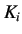
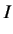
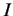
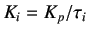

This parameter generates a control action depending on the history of errors. It means that the action is based on
the sum of the recent errors. It is proportional to both the magnitude as well as duration of the error. The summation
of the error over a period of time gives a value of the offset that should have been corrected previously. The integral
action can thus be generated by multiplying this accumulated error with an integral gain . Mathematical representation
of the same is given below.
|  |
 |
(5.2) |
where,
 is the integral output
is the integral gain (
, where,  is the integral time)
is the integral time)
The integral action tends to accelerate the control action. However, since it looks only at the past values of the error,
there is always a possibility of it causing the present values to overshoot the setpoint values.
rokade
2017-04-23